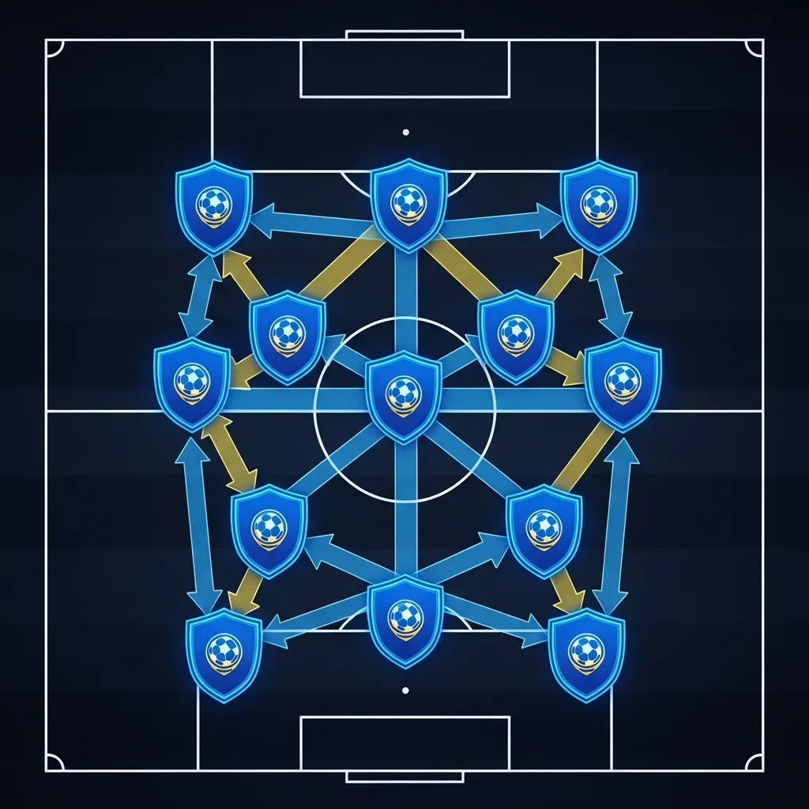

Defesa compacta
Feche o corredor central antes do chute nascer
- Neutralize triangulação curta sem puxar zagueiro pra fora da área.
- Proteja a meia-lua com instruções prontas de volante e lateral.
- Reduza gol bobo quando o adversário só sabe correr em linha reta.